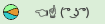
Мало кто знает, но существует аналог Grasshopper (Rhinocerros) и Dinamo. Этот инструмент развивается уже более 10 лет. И в отличие от упомянутых, имеет полностью открытый исходный код.
Представляю вам СВеРЧОК (Система векторного рабочего черчения и объёмного конструирования). Сверчок - мощный инструмент для архитектора, позволяющий визуально программировать узлами.
Не погрешу против истины, что: "Кто понимает ценность свободного программного обеспечения, тот компьютерно грамотный".
Sverchok — это не просто надстройка для работы с сетками (mesh), а полноценная параметрическая CAD-система, узлы которой генерируют и оперируют различными типами геометрических данных.
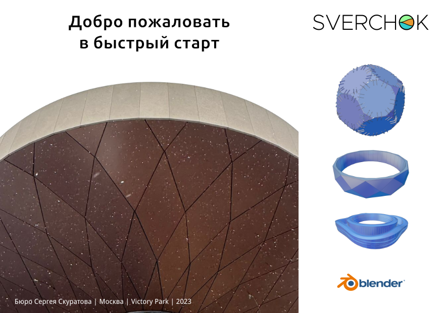
Вопреки распространенному мнению, Sverchok работает не только с полигональными сетками. В его основе лежат различные типы данных:
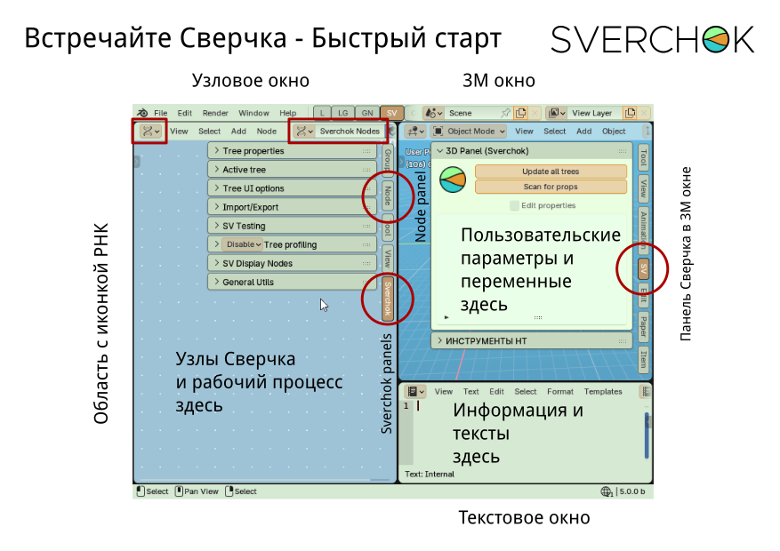
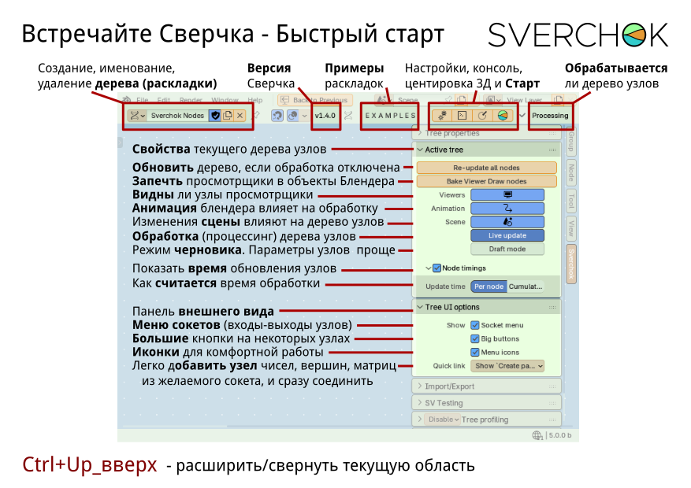
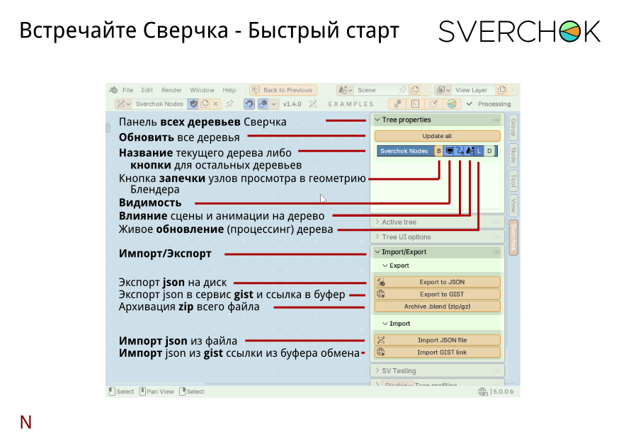
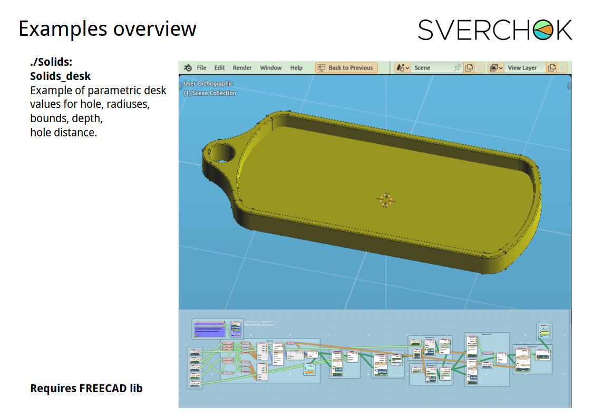
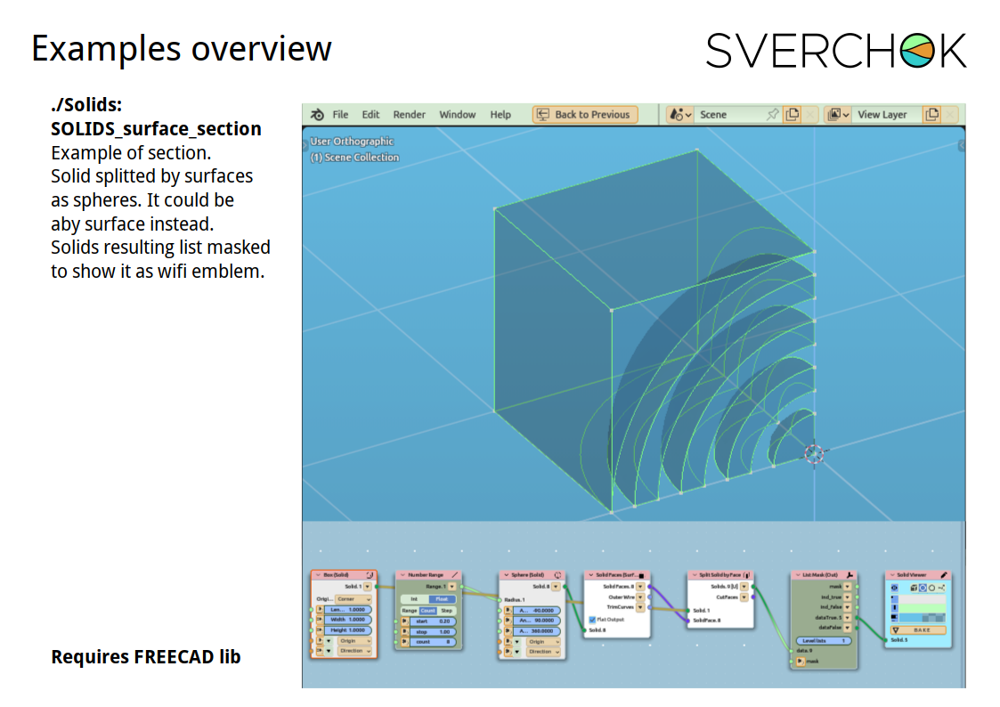
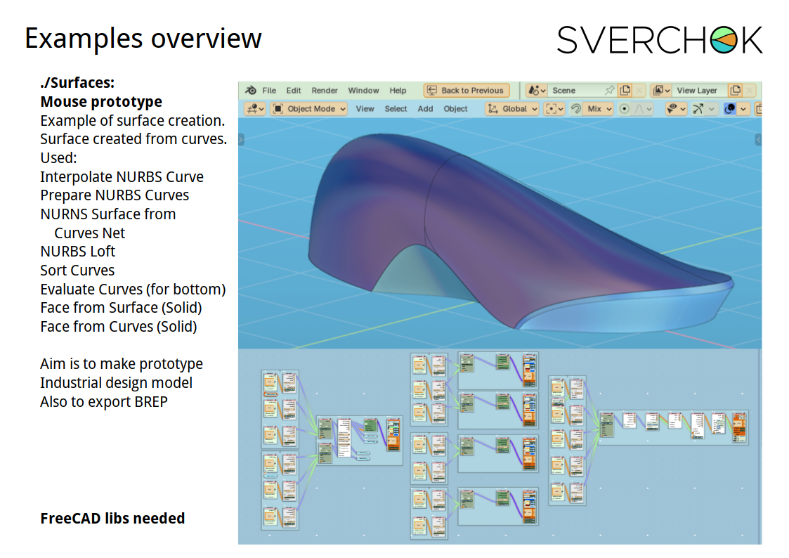
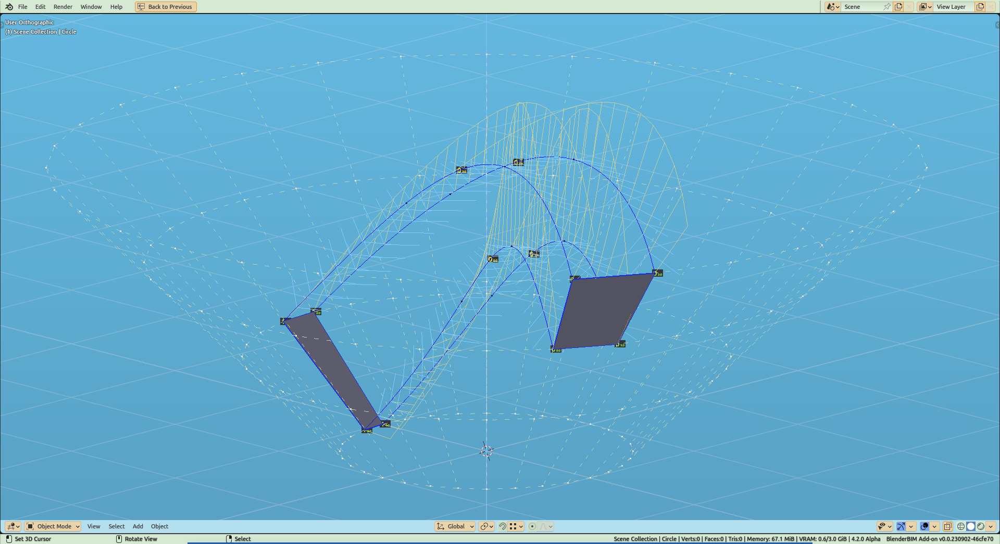
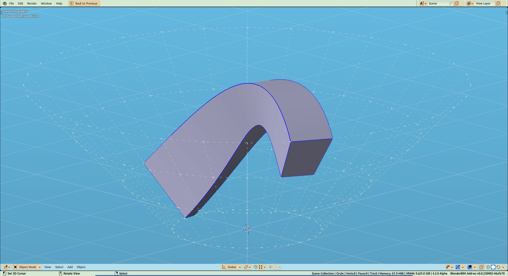
| Критерий | Grasshopper (Rhino) | Sverchok (Blender) |
|---|---|---|
| Базовая геометрия | Нативные NURBS-кривые и поверхности (ядро Rhino). | Гибридная: Нативные NURBS-кривые/поверхности (собственные узлы) + Твердотельные объекты через интеграцию с FreeCAD + Полигональные сетки. |
| Экосистема | Огромное количество коммерческих и бесплатных плагинов для узкоспециализированного инжиниринга (структурный, климатический, оптимизация). | Свободные коммерческие плагины, + глубокая интеграция с Blender API и FreeCAD открывает доступ к миру open-source библиотек (OpenCASCADE, SciPy и др.). |
| Рабочий процесс | Тесная, но дискретная связь с Rhino. Геометрия "запекается" для дальнейшего использования. | Глубокая интеграция с Blender. Параметрические объекты могут теснее взаимодействовать со сценой Blender (материалы, освещение, частицы). |
| Основная специализация | Архитектурное и инженерное проектирование, требующее точных NURBS-поверхностей и доступа к профессиональным расчетным пакетам. | Архитектурное проектирование, позволяюее гибридный подход (mesh + CAD) и глубокую интеграцию с инструментарием 3D-графики (рендеринг, анимация), и также вывод чертежей и моделей в BIM/CAD среды. |
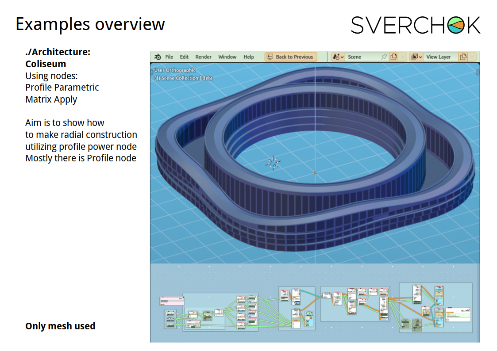
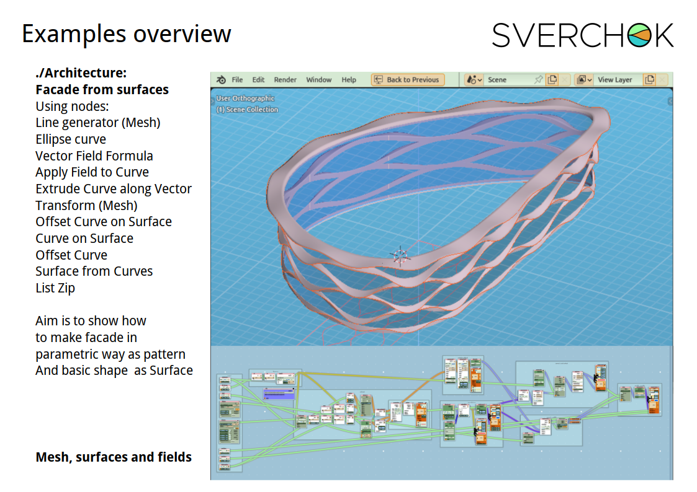
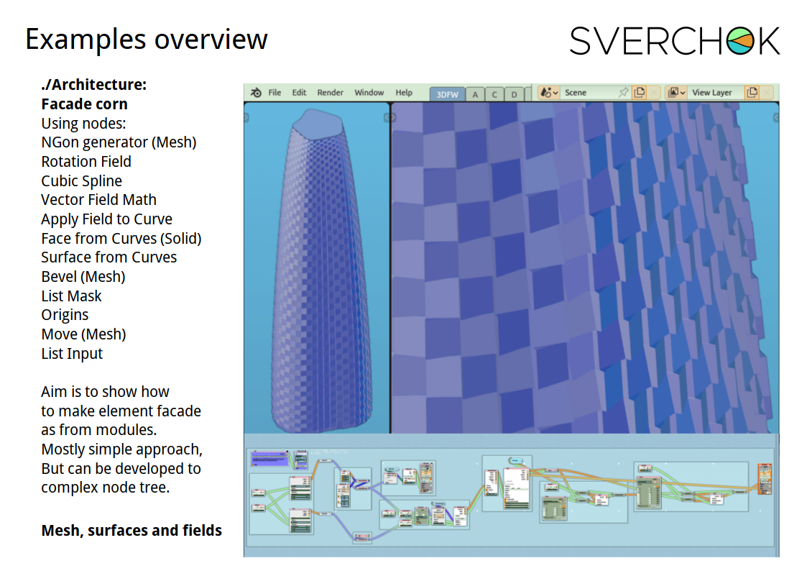
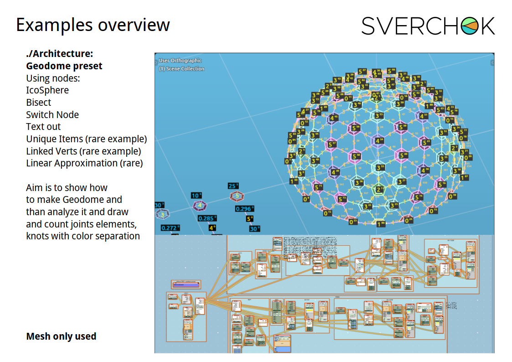
| Категория / Расширение | Grasshopper (Rhino) | Sverchok (Blender) |
|---|---|---|
| Базовые и вспомогательные | Огромное количество утилит: Human, LunchBox, Elefront (управление данными и геометрией), GhPython (скриптинг на Python). | Extra (доп. утилиты), bmesh (доступ к API полигонального моделирования Blender). |
| Анализ окружающей среды | Ladybug Tools — мощнейший инструмент для анализа погодных данных (температура, ветер, влажность) на основе EnergyPlus Weather данных. | Ladybug sverchok — порт для Sverchok. Позволяет проводить аналогичный анализ, но глубже интегрирован в среду Blender для визуализации результатов. |
| BIM и IFC (OpenBIM) | IfcHopperShell (на базе IfcOpenShell) — позволяет создавать IFC-совместимую геометрию (например, IfcExtrudedAreaSolid) прямо в Grasshopper . Также GeomGym GSA для конвертации IFC в аналитические модели . | Sverchok-IFC (на базе IfcOpenShell/Bonsai) — глубокая интеграция с BlenderBIM. Позволяет не только создавать, но и читать/изменять IFC-модели, используя параметрические возможности Sverchok. |
| Работа с облаками точек | Ограничена. Обычно требует написания скриптов на C# или Python. Использование Open3D затруднено из-за IronPython (не поддерживает стандартные библиотеки Python) . | Open3D — полноценный порт или интеграция. Благодаря нативному Python в Blender, Sverchok может напрямую использовать мощные алгоритмы Open3D для обработки облаков точек и mesh (регистрация, фильтрация, реконструкция). |
| Инженерный анализ и расчеты | IDEA StatiCa (расчет стальных узлов и соединений) , Oasys GSA (структурный анализ) , Karamba3D (МКЭ), RFEM интеграция . | FreeCAD ядро — уже обсуждали. Менее специализированные, но гибкие инструменты на основе SciPy/NumPy, а также вывод геометрии для работы в других программах типа Лира-САПР. |
| Специализированные инструменты | Dendro (вумерное моделирование на OpenVDB) , IG-Mesh (продвинутая обработка mesh) , Groundhog (ландшафтная архитектура). | Megapolis — изначально создавался для Sverchok. Инструментарий для генерации городов, дорожных сетей и кварталов на основе параметрических правил. |
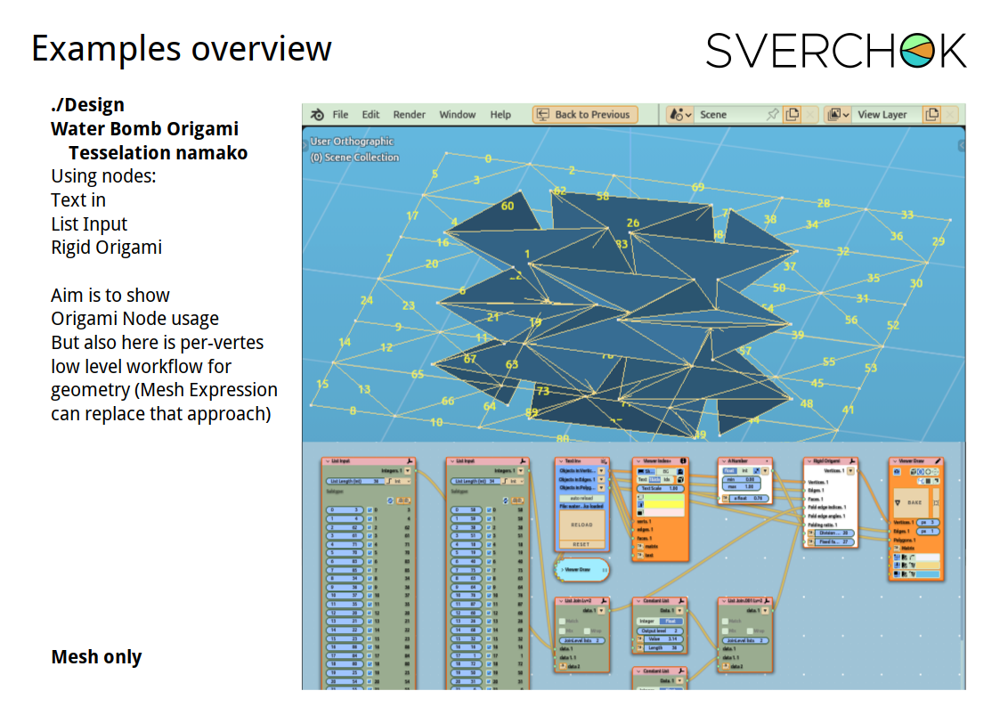
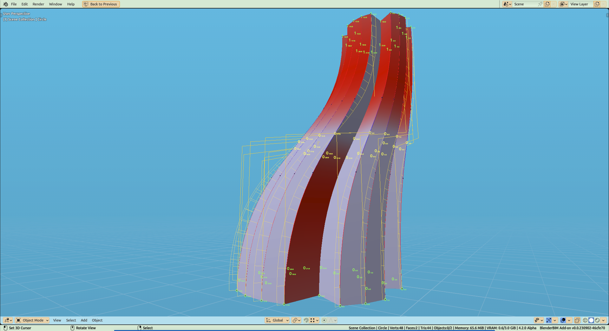
Происхождение экосистемы: Экосистема Grasshopper — это классическая "платная" или "профессиональная" индустрия, где плагины часто являются коммерческими продуктами, интегрированными в крупные инженерные компании (IDEA StatiCa, Oasys). Экосистема Sverchok глубоко интегрирована в open-source мир Blender и Python, что дает доступ к таким библиотекам, как Open3D и IfcOpenShell, более нативно.
BIM и IFC: Оба инструмента движутся в сторону OpenBIM через IfcOpenShell. Однако Sverchok-IFC в связке с Bonsai (бывший BlenderBIM) предлагает, возможно, более глубокую двустороннюю связь, так как Blender сам становится BIM-редактором. Grasshopper же чаще используется для генерации геометрии с последующим экспортом в IFC. Тем не менее, в Сверчке есть и собственный быстрый экспорт IFC, который часто даёт минимально необходимый результат.
Работа с данными реального мира (Open3D, Ladybug): В Sverchok есть нативная поддержка Python, что и приводит часто к более тесной интеграции. В то время как пользователи Grasshopper вынуждены писать сложные обходные пути на C# для работы с Open3D, Sverchok может напрямую использовать эту библиотеку. С Ladybug ситуация обратная: это "родной" инструмент для Grasshopper, а в Sverchok он является портом, но с лучшей визуализацией в Blender. Кроме того, более развитая узловая система дляч блендера, эксплуатирующая ladybug под названием VI-Suite, что работает в той же экосистеме, что и Bonsai и Sverchok - в Blender.
Городское планирование: Оба инструмента имеют специализированные расширения. Megapolis является ярким примером инструмента, который, возникнув в экосистеме Sverchok, предоставляет возможности, сравнимые с аналогичными плагинами для Grasshopper.
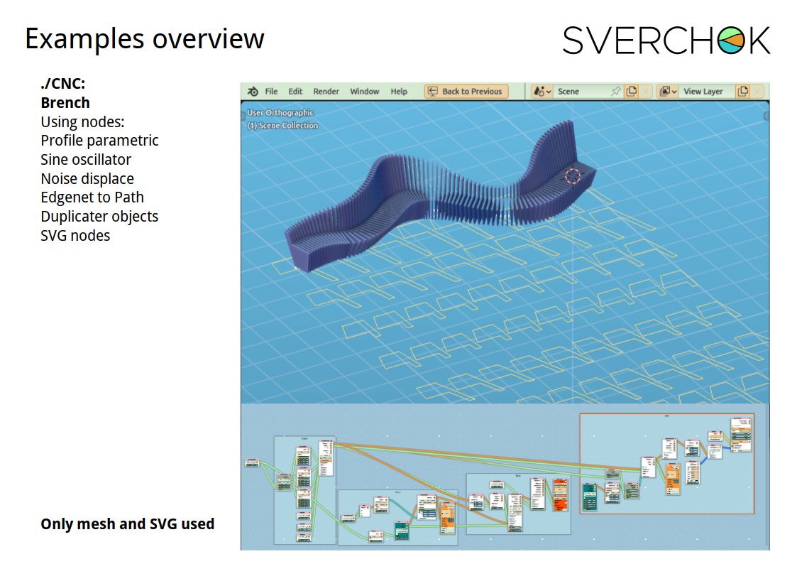
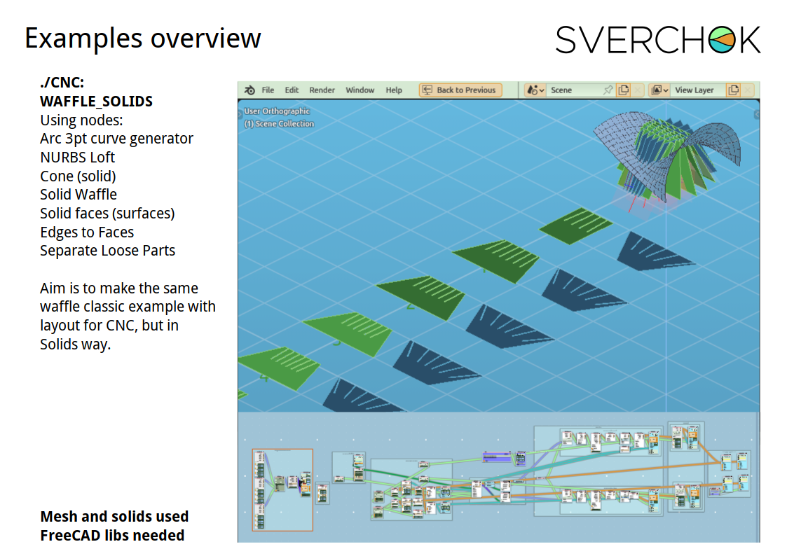
Сверчок вполне пригоден для работы, выпуска чертежей, моделей, создания фасадов, скульптур, мебели, ювелирных изделий.
Зеркало на MosHub, в перспективе при блокировке Гитхаб будем там.